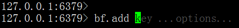
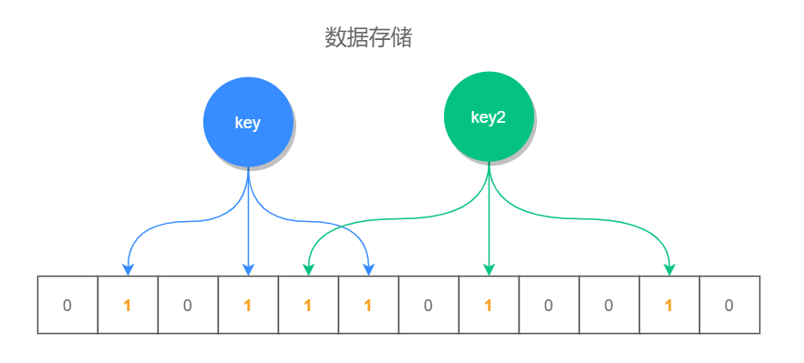

- 01 Redis 是如何执行的.md
- 02 Redis 快速搭建与使用.md
- 03 Redis 持久化——RDB.md
- 04 Redis 持久化——AOF.md
- 05 Redis 持久化——混合持久化.md
- 06 字符串使用与内部实现原理.md
- 07 附录：更多字符串操作命令.md
- 08 字典使用与内部实现原理.md
- 09 附录：更多字典操作命令.md
- 10 列表使用与内部实现原理.md
- 11 附录：更多列表操作命令.md
- 12 集合使用与内部实现原理.md
- 13 附录：更多集合操作命令.md
- 14 有序集合使用与内部实现原理.md
- 15 附录：更多有序集合操作命令.md
- 16 Redis 事务深入解析.md
- 17 Redis 键值过期操作.md
- 18 Redis 过期策略与源码分析.md
- 19 Redis 管道技术——Pipeline.md
- 20 查询附近的人——GEO.md
- 21 游标迭代器（过滤器）——Scan.md
- 22 优秀的基数统计算法——HyperLogLog.md
- 23 内存淘汰机制与算法.md
- 24 消息队列——发布订阅模式.md
- 25 消息队列的其他实现方式.md
- 26 消息队列终极解决方案——Stream（上）.md
- 27 消息队列终极解决方案——Stream（下）.md
- 28 实战：分布式锁详解与代码.md
- 29 实战：布隆过滤器安装与使用及原理分析.md
- 30 完整案例：实现延迟队列的两种方法.md
- 31 实战：定时任务案例.md
- 32 实战：RediSearch 高性能的全文搜索引擎.md
- 33 实战：Redis 性能测试.md
- 34 实战：Redis 慢查询.md
- 35 实战：Redis 性能优化方案.md
- 36 实战：Redis 主从同步.md
- 37 实战：Redis哨兵模式（上）.md
- 38 实战：Redis 哨兵模式（下）.md
- 39 实战：Redis 集群模式（上）.md
- 40 实战：Redis 集群模式（下）.md
- 41 案例：Redis 问题汇总和相关解决方案.md
- 42 技能学习指南.md
- 43 加餐：Redis 的可视化管理工具.md
29 实战：布隆过滤器安装与使用及原理分析
我们前面有讲到过 HyperLogLog 可以用来做基数统计，但它没提供判断一个值是否存在的查询方法，那我们如何才能查询一个值是否存在于海量数据之中呢？
如果使用传统的方式，例如 SQL 中的传统查询，因为数据量太多，查询效率又低有占用系统的资源，因此我们需要一个优秀的算法和功能来实现这个需求，这是我们今天要讲的——布隆过滤器。
开启布隆过滤器
在 Redis 中不能直接使用布隆过滤器，但我们可以通过 Redis 4.0 版本之后提供的 modules（扩展模块）的方式引入，本文提供两种方式的开启方式。
方式一：编译方式
1. 下载并安装布隆过滤器
git clone https://github.com/RedisLabsModules/redisbloom.git
cd redisbloom
make # 编译redisbloom
编译正常执行完，会在根目录生成一个 redisbloom.so 文件。
2. 启动 Redis 服务器
> ./src/redis-server redis.conf --loadmodule ./src/modules/RedisBloom-master/redisbloom.so
其中 --loadmodule 为加载扩展模块的意思，后面跟的是 redisbloom.so 文件的目录。
方式二：Docker 方式
docker pull redislabs/rebloom # 拉取镜像
docker run -p6379:6379 redislabs/rebloom # 运行容器
启动验证
服务启动之后，我们需要判断布隆过滤器是否正常开启，此时我们只需使用 redis-cli 连接到服务端，输入 bf.add 看有没有命令提示，就可以判断是否正常启动了，如下图所示：

如果有命令提示则表名 Redis 服务器已经开启了布隆过滤器。
布隆过滤器的使用
布隆过滤器的命令不是很多，主要包含以下几个：
- bf.add：添加元素
- bf.exists：判断某个元素是否存在
- bf.madd：添加多个元素
- bf.mexists：判断多个元素是否存在
- bf.reserve：设置布隆过滤器的准确率
具体使用如下所示：
127.0.0.1:6379> bf.add user xiaoming
(integer) 1
127.0.0.1:6379> bf.add user xiaohong
(integer) 1
127.0.0.1:6379> bf.add user laowang
(integer) 1
127.0.0.1:6379> bf.exists user laowang
(integer) 1
127.0.0.1:6379> bf.exists user lao
(integer) 0
127.0.0.1:6379> bf.madd user huahua feifei
1) (integer) 1
2) (integer) 1
127.0.0.1:6379> bf.mexists user feifei laomiao
1) (integer) 1
2) (integer) 0
可以看出以上结果没有任何误差，我们再来看一下准确率 bf.reserve 的使用：
127.0.0.1:6379> bf.reserve user 0.01 200
(error) ERR item exists #已经存的 key 设置会报错
127.0.0.1:6379> bf.reserve userlist 0.9 10
OK
可以看出此命令必须在元素刚开始执行，否则会报错，它有三个参数：key、error_rate 和 initial_size。
其中：
- error_rate：允许布隆过滤器的错误率，这个值越低过滤器占用空间也就越大，以为此值决定了位数组的大小，位数组是用来存储结果的，它的空间占用的越大（存储的信息越多），错误率就越低，它的默认值是 0.01。
- initial_size：布隆过滤器存储的元素大小，实际存储的值大于此值，准确率就会降低，它的默认值是 100。
后面原理部分会讲到 error_rate 和 initial_size 对准确率影响的具体原因。
代码实战
下面我们用 Java 客户端来实现布隆过滤器的操作，因为 Jedis 没有直接操作布隆过滤器的方法，所以我们使用 Jedis 操作 Lua 脚本的方式来实现布隆过滤器，代码如下：
import redis.clients.jedis.Jedis;
import utils.JedisUtils;
import java.util.Arrays;
public class BloomExample {
private static final String _KEY = "user";
public static void main(String[] args) {
Jedis jedis = JedisUtils.getJedis();
for (int i = 1; i < 10001; i++) {
bfAdd(jedis, _KEY, "user_" + i);
boolean exists = bfExists(jedis, _KEY, "user_" + i);
if (!exists) {
System.out.println("未找到数据 i=" + i);
break;
}
}
System.out.println("执行完成");
}
/**
* 添加元素
* @param jedis Redis 客户端
* @param key key
* @param value value
* @return boolean
*/
public static boolean bfAdd(Jedis jedis, String key, String value) {
String luaStr = "return redis.call('bf.add', KEYS[1], KEYS[2])";
Object result = jedis.eval(luaStr, Arrays.asList(key, value),
Arrays.asList());
if (result.equals(1L)) {
return true;
}
return false;
}
/**
* 查询元素是否存在
* @param jedis Redis 客户端
* @param key key
* @param value value
* @return boolean
*/
public static boolean bfExists(Jedis jedis, String key, String value) {
String luaStr = "return redis.call('bf.exists', KEYS[1], KEYS[2])";
Object result = jedis.eval(luaStr, Arrays.asList(key, value),
Arrays.asList());
if (result.equals(1L)) {
return true;
}
return false;
}
}
但我们发现执行了半天，执行的结果竟然是：
执行完成
没有任何误差，奇怪了，于是我们在循环次数后面又加了一个 0，执行了大半天之后，发现依旧是相同的结果，依旧没有任何误差。
这是因为对于布隆过滤器来说，它说没有的值一定没有，它说有的值有可能没有。
于是我们把程序改一下，重新换一个 key 值，把条件改为查询存在的数据，代码如下：
import redis.clients.jedis.Jedis;
import utils.JedisUtils;
import java.util.Arrays;
public class BloomExample {
private static final String _KEY = "userlist";
public static void main(String[] args) {
Jedis jedis = JedisUtils.getJedis();
for (int i = 1; i < 100001; i++) {
bfAdd(jedis, _KEY, "user_" + i);
boolean exists = bfExists(jedis, _KEY, "user_" + (i + 1));
if (exists) {
System.out.println("找到了" + i);
break;
}
}
System.out.println("执行完成");
}
/**
* 添加元素
* @param jedis Redis 客户端
* @param key key
* @param value value
* @return boolean
*/
public static boolean bfAdd(Jedis jedis, String key, String value) {
String luaStr = "return redis.call('bf.add', KEYS[1], KEYS[2])";
Object result = jedis.eval(luaStr, Arrays.asList(key, value),
Arrays.asList());
if (result.equals(1L)) {
return true;
}
return false;
}
/**
* 查询元素是否存在
* @param jedis Redis 客户端
* @param key key
* @param value value
* @return boolean
*/
public static boolean bfExists(Jedis jedis, String key, String value) {
String luaStr = "return redis.call('bf.exists', KEYS[1], KEYS[2])";
Object result = jedis.eval(luaStr, Arrays.asList(key, value),
Arrays.asList());
if (result.equals(1L)) {
return true;
}
return false;
}
}
这次我们发现执行不一会就出现了如下信息：
找到了344
执行完成
说明循环执行了一会之后就出现误差了，代码执行也符合布隆过滤器的预期。
原理
上面我们学会了布隆过滤器的使用，下面我们就来看下它的实现原理。
Redis 布隆过滤器的实现，依靠的是它数据结构中的一个位数组，每次存储键值的时候，不是直接把数据存储在数据结构中，因为这样太占空间了，它是利用几个不同的无偏哈希函数，把此元素的 hash 值均匀的存储在位数组中，也就是说，每次添加时会通过几个无偏哈希函数算出它的位置，把这些位置设置成 1 就完成了添加操作。
当进行元素判断时，查询此元素的几个哈希位置上的值是否为 1，如果全部为 1，则表示此值存在，如果有一个值为 0，则表示不存在。因为此位置是通过 hash 计算得来的，所以即使这个位置是 1，并不能确定是那个元素把它标识为 1 的，因此布隆过滤器查询此值存在时，此值不一定存在，但查询此值不存在时，此值一定不存在。
并且当位数组存储值比较稀疏的时候，查询的准确率越高，而当位数组存储的值越来越多时，误差也会增大。
位数组和 key 之间的关系，如下图所示：

布隆过滤器使用场景
它的经典使用场景包括以下几个：
- 垃圾邮件过滤
- 爬虫里的 URL 去重
- 判断一个元素在亿级数据中是否存在
布隆过滤器在数据库领域的使用也比较广泛，例如：HBase、Cassandra、LevelDB、RocksDB 内部都有使用布隆过滤器。
小结
通过本文我们知道可以使用 Redis 4.0 之后提供的 modules 方式来开启布隆过滤器，并学习了布隆过滤器的三个重要操作方法 bf.add 添加元素、bf.exists 查询元素是否存在，还有 bf.reserve 设置布隆过滤器的准确率，其中 bf.reserve 有 2 个重要的参数：错误率和数组大小，错误率设置的越低，数组设置的越大，需要存储的空间就越大，相对来说查询的错误率也越低，需要如何设置需要使用者根据实际情况进行调整。我们也知道布隆过滤器的特点：当它查询有数据时，此数据不一定真的存在，当它查询没有此数据时，此数据一定不存在。